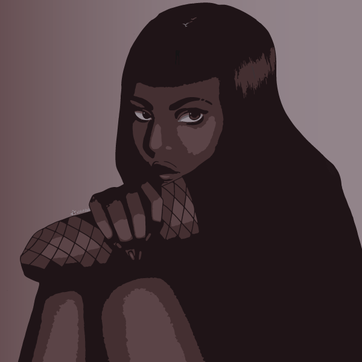
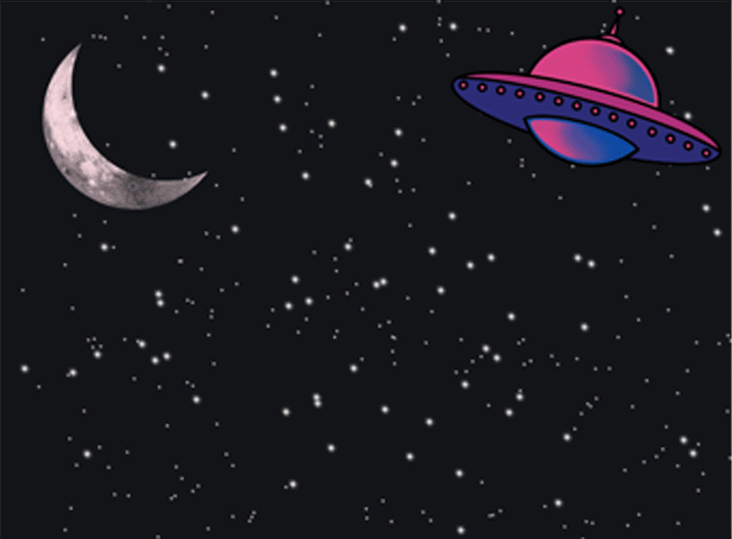

Gallery
Raster Image

I chose these images because, altogether, they have a modern Victorian vampire aesthetic, and I love that look. The secret library door represents my love of books and my love of discovery and how it feels when I find something new and interesting hiding in the pages of a book. The arched hallway represents my love for gothic aesthetics, but also my love for video games since an arched hallway is also called an "arcade." I enjoyed the hidden wordplay too. The neon heart represents my heart centered nature, and my love for the nighttime, since I associate neon signs with nighttime. My inspirations were Victorian aesthetics, art museums, and a tabletop roleplaying game called vampire: The Masquerade.
Vector Image

I was most intrigued by the image trace feature and chose to use it on an image I drew a few years ago. I like the muted pastel colors because they represent a softer kind of darkness that implies a point of no return rather than fear, or imminent danger. The inspiration comes from the original character I used. She is defensive and distrustful, and prefers to hide in the shadows, as is shown in the image through her expression, body language, and the fact that she has her back facing the apparent light source.
Audio Project
I chose to depict a fictional moment in which a person travels through a gateway between two parallel realities. It's meant to be both peaceful and unsettling, the way I imagine such a journey to be. I chose this because I believe that looking at a work of art created by someone you've never met is to experience a kind of gateway between parallel worlds.
Animated Gif

The GIF depicts aliens abducting Pete Davidson as a favor to any guy who dreams of dating a celebrity. It's funny because Pete Davidson is that one ordinary guy who gets all the pretty girls, so abducting him gives other ordinary guys a chance to date those pretty girls.
10 Second Animation
My animation represents mystery. The gas station is a liminal space, a gateway between worlds. It is meant to seem uncanny, abandoned but the lights are on, beautiful backdrop and colors but scary in that it's the middle of nowhere and the neon sign reads "die" when it's meant to say "diesel." The girl disappears suddenly with no explanation how.
P5.js Program
The concept behind this program is an endless hallway. Every time you pass through the door, there's an identical hallway on the other side with another door leading to yet another identical hallway. It's inspired by a popular horror theme in which a person is trapped in a building that was abandoned for so long that it grew resentful and now turns on anyone who enters by becoming an inescapable labyrinth. The shapes are meant to create a three dimensional illusion, and the colors are meant to convey a setting that is dreamlike and unsettling.
Final Project Website
About the 2023 Writer's Strike
I chose to make a website about the 2023 Writer's Strike because, as a writer, it immediately caught my attention. I chose to embed some videos from YouTube and present a few infographics, as well as links to further reading. I wanted the information to be as clear and easy to understand as possible. The colors and fonts I chose in the website design mirror the picket signs used during the strike. I imagine the public would have the best experience with my website if they access it on mobile, since I put a lot of effort into making it scalable and easy to read.